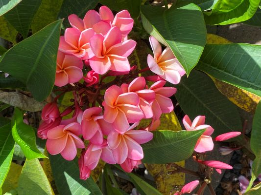
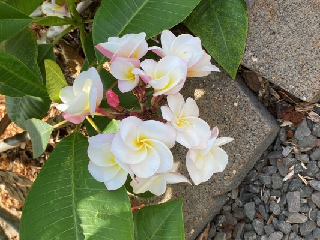

Photo Tour of Oahu


The Little Plumeria Farm is a farm that specializes in cultivating plumerias, from their colors to the way they smell. The area is as beautiful as the flowers themselves! You can even bring some of their flowers home with you. Fun fact, plumerias aren't native to Hawaii, they were intoduced in the late 19th century! They are actually native to Mexico, Central America, the Caribbean, and northwestern South America.